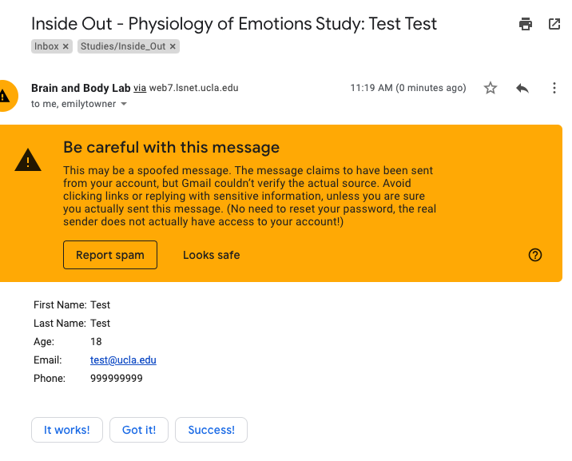
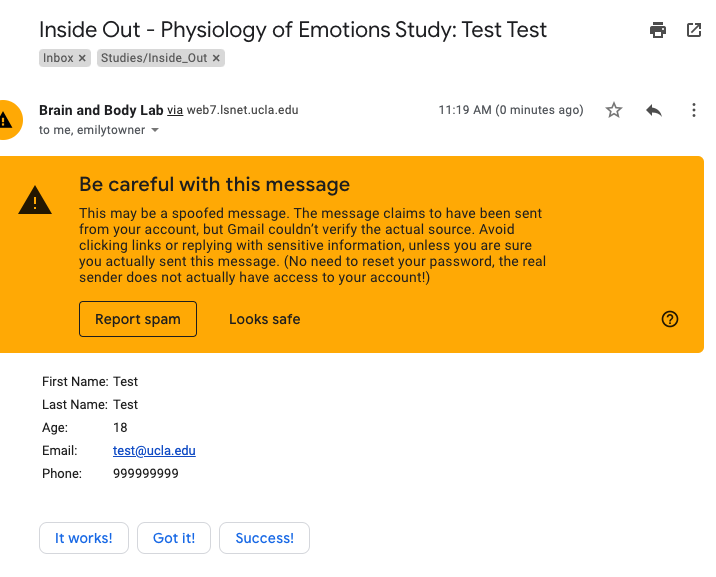

Study 1 - COVID - Methods
Measures
Information
| Title | Name | Description | Reference |
|---|---|---|---|
| info | Information questionnaire | Assesses demographics, health, and location information | Made by BABLab |
| covid_objective | Objective impact of COVID-19 | Assesses the objective impact of COVID-19 including infection, quarantine, household, social distancing etc. | Made by BABLab |
Somatic
| Title | Name | Description | Reference |
|---|---|---|---|
| somna | Somatic markers of negative affect | Assesses physical sensations of anxiety and sadness, where they are located, and their intensity | Made by BABLab |
| maia | Multidimensional Assessment of Interoceptive Awareness | Multidimensional self-report measure of interoceptive body awareness | Mehling et al., 2012 |
| hai | Health anxiety inventory | Assesses people’s anxiety about health symptoms (hypochondriasis) | Salkovskis et al, 2006 |
| ss | Somatic symptoms | Assesses a range of somatic symptoms in adult participants | Körber et al., 2011 |
| pill | Pennebaker inventory of limbid languidness | Measures people’s tendency to notice and report a braod array of physical symptoms and sensations. | Pennebaker, 1982 |
| pedsql_gi | Pediatric Quality of life – Gastrointestinal Symptoms Module | Assess incidence of Gastrointestinal Symptoms and fatigue in children | Varni et al., 2012 |
| med_check | Medication checklist | List of medications that participants are on – needed for physiology analyses as well as verification of physical health issues. | Made by BABLab |
| gastrointestinal_disorders | Gastrointetsinal disorders questionnaire | Assesses gastrointestinal issues, their frequency and intensity | Made by BABLab |
| rome | Rome IV criteria questionnaire | Assesses the presence of symptoms which meet criteria for irritable bowel syndrome as stated by the Rome IV | Made by BABLab |
| menstrual_cycle | Menstrual cycle questionnaire | Assesses menstrual phase, which affects gastrointestinal responding, as well as medications which may affect menstrual phase such as oral contraceptive use | Made by BABLab |
| psst | Premenstrual symptoms screening tool | Assesses premenstrual syndromes and criteria for premenstrual dysphoric disorder (pmdd) as well as premenstrual syndrome (pms). | Steiner et al., 2003 |
Stress
| Title | Name | Description | Reference |
|---|---|---|---|
| covid_subjective | Subjective impact of COVID-19 | Assesses the subjective impact of COVID-19 on well-being. | Made by BABLab |
| pss | Perceived stress scale | The Perceived Stress Scale is a classic stress assesment instrument. This tool, while originally developed in 1983, remains a popular choice for helping us understand how different situations affect our feelings and our perceived stress. The questions in this scale as about your feelings and thoughts during the last month. In each case, you willl be asked ot indicate how often. | Cohen et al., 1983 |
| sasrq | Stanford acute stress reaction questionnaire | Assesses the psychological symptoms experienced in the aftermath of a traumatic event. | Cardeña et al., 2000 |
| cte | Childhood traumatic events questionnaire | The Childhood Traumautic Events Questionnaire is a brief survey of six early traumatic experiences (death, divorce, violence, sexual abuse, illnesss, and upheaval). | Pennebaker & Susman, 2013 |
| ctq | Childhood trauma questionnaire | The Childhood Trauma Questionnaire (CTQ) is a self-report instrument covering 28 items, to rate the severity of emotional abuse and neglect, physical abuse and neglect and sexual abuse. It has been validated in terms of psychometric test properties in samples of psychiatric patients, i.e. drug and substance abusers. This data set includes five CTQ subscale scores. | Bernstein et al., 1994 |
| ccfq | Cognitive control and flexibility questionnaire | Measures an individual’s percevied ability to exert control over intrusive, unwanted (negative) thoughts and emotions, and their ability to flexibly cope with a stressful situation. | Gabrys et al., 2018 |
| ptgi | Post-traumatic growth inventory | An instrument for assessing positive outcomes reported by persons who have experienced traumatic events. | Tedeschi & Calhoun, 1996 |
| usq | Undergraduate stress questionnaire | The undergraduate stress inventory presents students with various stressors and asks them to indicate if any of the events have happened to them. They are also asked how stressed they are by this event. | Crandall et al., 1992 |
| brcs | Brief resilient coping scale | The Brief Resilient Coping Scale (BRCS) is a 4-item measure designed to capture tendencies to cope with stress in a highly adaptive manner | Sinclair & Wallston, 2004 |
Mental health
| Title | Name | Description | Reference |
|---|---|---|---|
| stai | State-Trait Anxiety Inventory | The State-Trait Anxiety Inventory (STAI) is a commonly used measure of trait and state anxiety. It can be used in clinical settings to diagnose anxiety and to distinguish it from depressive syndromes. | Spielberger et al., 1983 |
| bdi | Beck depression inventory | Developed for the assessment of symptoms corresponding to criteria for diagnosing depressive disorders listed in the DSM IV | Beck et al., 1996 |
| mental_health_history | Mental health history | A questionnaire to assess mental health history | Made by BABLab |
Personality
| Title | Name | Description | Reference |
|---|---|---|---|
| bfi_10 | Big five personality inventory | Inventory that measures an individual on the big five factors of personality (extraversion, agreeableness, conscentiousness, neuroticism, and openness to experience). | John & Srivastava, 1999 |
| ius | Intolerance of uncertainty scale | The Intolerance of Uncertainty Scale includes items relating to the idea that uncertainty is unacceptable, reflects badly on a person, and leads to frustration, stress, and the inability to take action | Carleton et al., 2007 |
Lifestyle
| Title | Name | Description | Reference |
|---|---|---|---|
| psqi | Pittsburgh Sleep Quality Index | The Pittsburgh Sleep Quality Index (PSQI) is an effective instrument used to measure the quality and patterns of sleep in adults. It differentiates “poor” from “good” sleep quality by measuring seven areas (components): subjective sleep quality, sleep latency, sleep duration, habitual sleep efficiency, sleep disturbances, use of sleeping medications, and daytime dysfunction over the last month. | Buysse et al., 1989 |
| timeline | Timeline | Assesses how participants spend an average day in hour increments. Free response. | Made by BABLab |
| bfq | Brief food questionnaire | Assesses participants consumption of food groups. | Made by BABLab |
| ipaq | International physical activity questionnaire | Asks questions on physical activity. | Booth, 2000 |
Media
| Title | Name | Description | Reference |
|---|---|---|---|
| media_consumption | Media consumption questionnaire | Assesses social media use, news consumption, sources of information, and frequency of consumption in addition to beliefs. | Made by BABLab |
| smcs | Social media craving survey | Assesses social media cravings - adaptef from the Penn Alcohol Craving Scale (PACS) | Savci & Griffiths, 2019 |
Well-being
| Title | Name | Description | Reference |
|---|---|---|---|
| shs | Subjective Happiness Scale | A 4-item measure of gloval subjective happiness. | Lyubomirsky & Lepper, 1999 |
Qualitative
| Title | Name | Description | Reference |
|---|---|---|---|
| writing_about_emotions | Written Response | This prompt asks participants to write about their thoughts and feelings regarding an emotional event for five minutes. | Pennebaker, 1997 |
Notes on Measures
- Brief food questionnaire is based on current USDA recommended food guidelines
Procedure
Recruitment
Participants were recruited in two ways - via SONA and via a raffle.
The following materials were used:
Timing
Pilot time:
- Research Assistant #1 - 1 hour and 50 minutes
- Research Assistant #2 - 1 hour and 15 minutes
- Research Assistant #3 - 1 hour and 5 minutes
Questionnaire Order
- panas (assessed 3 times - once at beginning, once before writing, once after writing)
- information
- somna
- covid_objective
- somatic_symptoms (assessed currently and retrospectively before COVID-19)
- pss
- hai (assessed currently and retrospectively before COVID-19)
- bdi_ii (assessed currently and retrospectively before COVID-19)
- pill
- covid_subjective
- pedsql_gi (assessed currently and retrospectively before COVID-19)
- media_consumption
- ctq
- sci
- psqi
- cte
- timeline
- uclals
- sasrq
- ccfq
- maia (assessed currently and retrospectively before COVID-19)
- stai
- usq
- bfq (assessed currently and retrospectively before COVID-19)
- asc
- demographics
- shs
- mspss
- ipaq (assessed currently and retrospectively before COVID-19)
- ius
- smcs
- bfi
- ptgi_brcs
- mental_health_history
- med_check
- gastro
- rome
- menstrual
- panas
- written_response
- panas
Attention Checks
- covid_objective
- covid_subjective
- media_consumption
- scq
- sasrq
- bfq
- ipaq
- ptgi
Enrollment
Sign Ups
All participants (even those on SONA) are instructed to sign-up via our website which includes filling out a form that submits an email to the BABLab Gmail account.
 

- Add the participant to the ID spreadsheet on the ID Drive (make sure you are in the correct sheet for the version of the study)
- Compose an email from the “email_replies” template in BABLAB/Studies/Inside_Out/Private/Recruitment/email_replies.md (open this with TextEdit)
There are several current templates in here at all times to copy to an email. Copy and replace any brackets with the relevant information.
Important
Press reply and delete the two emails in the to field. Replace it with the correct email from the form.


- Generate a REDCap ID for that participant based on the spreadsheet
- In the REDCap project click Add/Edit Records
- Type in the corresponding new participant number and press enter
- Click into the participant instrument in the event you are running

- Enter the wave and study number, complete, lock, save and exit form
- Click into the first survey item
- Click into survey options and survey access code


- Copy the survey access code, paste into the email, and send

Participants do not always use the correct email form on the website, and instead just sign up via SONA
Therefore, we must cross-reference our SONA sign-ups with our ID spreadsheet.
- Log into SONA
- Click “My Studies” and “Timeslots”
- Click into your timeslot and cross reference the sign-ups with the ID spreadsheet
Add anyone who isn’t there and enroll them using the same procedure as above - make sure to insert the correct subject line into the email.
Tracking
- Mark the participant status on the ID spreadsheet as completed (green), in progress (yellow), not started (red), or duplicate/cancelled/mistake (dark red and strikethrough)
- Send the participant 3 reminders (spread out across three days)
The reminder templates can be found in the email_replies.md
Important
Each time you send a participant a reminder, you will need to ensure that their survey code and return code are correct. They can change each time a participant attempts to log in to the survey - so it is imperative to check before sending each reminder.
Participants will always have a survey code, which can be found by clicking survey options. You must click into the most recently completed survey when sending a reminder (check the timestamp to be sure they are not mid-completion)
Some participants will also have a return code (yellow button) if they saved their place. Remember to send this code to them as well.
- Mark each reminder as sent or na if completed/cancelled
- Fill in age, sex, and recontact permission
Granting Credit
- Once participants have completed the survey - log on and grant credit via SONA
Social